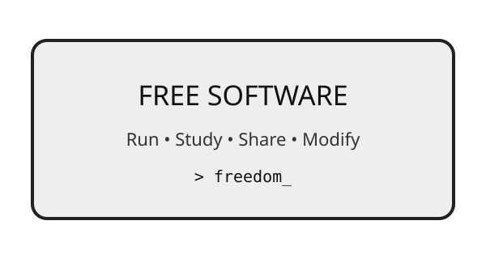
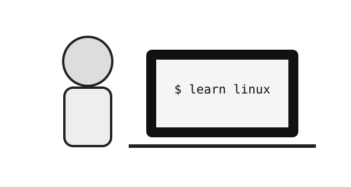

What Is Free Software?
I know SOME people may dont like it, but free software is software that gives users freedom to run, study, change, and share the program. This website introduces these ideas in a simple way for students.

A simple student website inspired by the Free Software Foundation.
I know SOME people may dont like it, but free software is software that gives users freedom to run, study, change, and share the program. This website introduces these ideas in a simple way for students.

Learning about free software can help students understand how programs work, share knowledge with others, and become more independent computer users.
